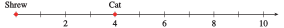
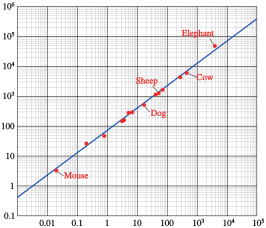

Subsection 10.2.1 Making a Log Scale
Because \(\log x\) grows very slowly as \(x\) increases, logarithms are useful for modeling phenomena that take on a very wide range of values. For example, biologists study how metabolic functions such as heart rate are related to an animal’s weight, or mass. The table shows the mass in kilograms of several mammals.
| Animal |
Shrew |
Cat |
Wolf |
Horse |
Elephant |
Whale |
| Mass, kg |
\(0.004\) |
\(4\) |
\(80\) |
\(300\) |
\(5400\) |
\(70,000\) |
Imagine trying to scale the \(x\)-axis to show all of these values. If we set tick marks at intervals of 10,000 kg, as shown below, we can plot the mass of the whale, and maybe the elephant, but the dots for the smaller animals will be indistinguishable.
On the other hand, we can plot the mass of the cat if we set tick marks at intervals of 1 kg, but the axis will have to be extremely long to include even the wolf. We cannot show the masses of all these animals on the same scale

To get around this problem, we can plot the log of the mass, instead of the mass itself. The table below shows the base 10 log of each animal’s mass, rounded to 2 decimal places.
| Animal |
Shrew |
Cat |
Wolf |
Horse |
Elephant |
Whale |
| Mass, kg |
\(0.004\) |
\(4\) |
\(80\) |
\(300\) |
\(5400\) |
\(70,000\) |
| Log (mass) |
\(-2.40\) |
\(0.60\) |
\(1.90\) |
\(2.48\) |
\(3.73\) |
\(4.85\) |
The logs of the masses range from -2.40 to 4.85. We can easily plot these values on a single scale, as shown below.
The scale above is called a logarithmic scale, or log scale. The tick marks are labeled with powers of 10, because, as you recall, a logarithm is actually an exponent. For example, the mass of the horse is 300 kg, and
\begin{equation*}
\log 300 = 2.48 ~~ \text{ so } ~~ 10^{2.48} = 300
\end{equation*}
When we plot 2.48 for the horse, we are really plotting the power of 10 that gives its mass, because \(10^{2.48} = 300\) kg. The exponents on base 10 are evenly spaced on a log scale, so we plot \(10^{2.48}\) about halfway between \(10^2\) and \(10^3\text{.}\)
Example 10.2.1.
Plot the values on a log scale.
| \(x\) |
\(0.0007\) |
\(0.2\) |
\(3.5\) |
\(1600\) |
\(72,000\) |
\(4 \times 10^8\) |
Solution.
We actually plot the logs of the values, so we first compute the base 10 logarithm of each number.
| \(x\) |
\(0.0007\) |
\(0.2\) |
\(3.5\) |
\(1600\) |
\(72,000\) |
\(4 \times 10^8\) |
| \(\log x\) |
\(-3.15\) |
\(-0.70\) |
\(0.54\) |
\(3.20\) |
\(4.86\) |
\(8.60\) |
Then we plot each logarithm, estimating its position between integer exponents. For example, we plot the first value, \(-3.15\text{,}\) closer to \(-3\) than to \(-4\text{.}\) The finished plot is shown below.
Checkpoint 10.2.2. Practice 1.
Complete the table by estimating the logarithm of each point plotted on the log scale below. Then use a calculator to give a decimal value for each point.
| \(\log x\) |
\(\hphantom{000}\) |
\(\hphantom{000}\) |
\(\hphantom{000}\) |
\(\hphantom{000}\) |
| \(x\) |
\(\hphantom{000}\) |
\(\hphantom{000}\) |
\(\hphantom{000}\) |
\(\hphantom{000}\) |
Solution.
| \(\log x\) |
\(-4\) |
\(-2.5\) |
\(1.5\) |
\(4.25\) |
| \(x\) |
\(0.0001\) |
\(0.00316\) |
\(31.6\) |
\(17,782.8\) |
Subsection 10.2.2 Labeling a Log Scale
Log scales allow us to plot a wide range of values, but there is a trade-off. Equal increments on a log scale do not correspond to equal differences in value, as they do on a linear scale. You can see this more clearly if we label the tick marks with their values, as well as powers of 10. The difference between \(10^1\) and \(10^0\) is \(10 - 1 = 9\text{,}\) but the difference between \(10^2\) and \(10^1\) is \(100 - 10 = 90\text{.}\)
As we move from left to right on this scale, we multiply the value at the previous tick mark by 10. Moving up by equal increments on a log scale does not add equal amounts to the values plotted; it multiplies the values by equal factors.
If we would like to label the log scale with integers, we get a very different looking scale, one in which the tick marks are not evenly spaced.
Example 10.2.3.
Plot the integer values 2 through 9 and 20 through 90 on a log scale.
Solution.
We compute the logarithm of each integer value.
| \(x\) |
\(2\) |
\(3\) |
\(4\) |
\(5\) |
\(6\) |
\(7\) |
\(8\) |
\(9\) |
| \(\log x\) |
\(0.301\) |
\(0.477\) |
\(0.602\) |
\(0.699\) |
\(0.778\) |
\(0.845\) |
\(0.903\) |
\(0.954\) |
| \(x\) |
\(20\) |
\(30\) |
\(40\) |
\(50\) |
\(60\) |
\(70\) |
\(80\) |
\(90\) |
| \(\log x\) |
\(1.301\) |
\(1.477\) |
\(1.602\) |
\(1.699\) |
\(1.778\) |
\(1.845\) |
\(1.903\) |
\(1.954\) |
We plot on a log scale, as shown below.
On the log scale in
Example 10.2.3, notice how the integer values are spaced: They get closer together as they approach the next power of
\(10\text{.}\) You will often see log scales labeled not with powers of
\(10\text{,}\) but with integer values, like this:
In fact, log-log graph paper scales both axes with logarithmic scales.
Checkpoint 10.2.4. Practice 2.
The opening page of Chapter 6 shows the "mouse-to-elephant" curve, a graph of the metabolic rate of mammals as a function of their mass. (The elephant does not appear on that graph, because its mass is too big.) The figure below shows the same function, graphed on log-log paper.

Use this graph to estimate the mass and metabolic rate for the following animals, labeled on the graph.
| Animal |
Mouse |
Dog |
Sheep |
Cow |
Elephant |
| Mass (kg) |
\(\hphantom{000}\) |
\(\hphantom{000}\) |
\(\hphantom{000}\) |
\(\hphantom{000}\) |
\(\hphantom{000}\) |
| Metabolic rate (kcal/day) |
\(\hphantom{000}\) |
\(\hphantom{000}\) |
\(\hphantom{000}\) |
\(\hphantom{000}\) |
\(\hphantom{000}\) |
Solution.
| Animal |
Mouse |
Dog |
Sheep |
Cow |
Elephant |
| Mass (kg) |
\(0.02\) |
\(15\) |
\(50\) |
\(500\) |
\(4000\) |
| Metabolic rate (kcal/day) |
\(3.5\) |
\(500\) |
\(1500\) |
\(6000\) |
\(50,000\) |
Checkpoint 10.2.5. QuickCheck 2.
True or False.
Equal increments on a log scale correspond to equal differences in value.
Moving up by equal increments on a log scale multiplies the values by equal factors.
If we label a log scale with integers, the tick marks are evenly spaced.
On log-log graph paper, both axes are labeled with logarithmic scales.
Subsection 10.2.3 Acidity and the pH Scale
You may have already encountered log scales in some everyday applications. A simple example is the pH scale, used by chemists to measure the acidity of a substance or chemical compound. This scale is based on the concentration of hydrogen ions in the substance, denoted by \([H^+]\text{.}\) The pH value is defined by the formula
\begin{equation*}
\text{pH}=-\log_{10}[H^+]
\end{equation*}
Values for pH fall between 0 and 14, with 7 indicating a neutral solution. The lower the pH value, the more acidic the substance. Some common substances and their pH values are shown in the table.
| Substance |
pH |
\([H^+]\) |
| Battery acid |
\(1\) |
\(0.1\) |
| Lemon juice |
\(2\) |
\(0.01\) |
| Vinegar |
\(3\) |
\(0.001\) |
| Milk |
\(6.4\) |
\(10^{-6.4}\) |
| Baking soda |
\(8.4\) |
\(10^{-8.4}\) |
| Milk of magnesia |
\(10.5\) |
\(10^{-10.5}\) |
| Lye |
\(13\) |
\(10^{-13}\) |
A decrease of 1 on the pH scale corresponds to an increase in acidity by a factor of 10. Thus, lemon juice is 10 times more acidic than vinegar, and battery acid is 100 times more acidic than vinegar.
Example 10.2.6.
Calculate the pH of a solution with a hydrogen ion concentration of \(3.98 \times 10^{-5}\text{.}\)
The water in a swimming pool should be maintained at a pH of 7.5. What is the hydrogen ion concentration of the water?
Solution.
We use a calculator to evaluate the pH formula with
\([H^+] = 3.98\times10^{-5}\text{.}\)
\begin{equation*}
\text{pH} = -\log_{10}{(\alert{3.98 \times 10^{-5}})} \approx 4.4
\end{equation*}
We solve the equation
\begin{equation*}
\alert{7.5} = -\log_{10}[H^+]
\end{equation*}
for \([H^+]\text{.}\) First, we write
\begin{equation*}
-7.5 = \log_{10}[H^+]
\end{equation*}
Then we convert the equation to exponential form to get
\begin{equation*}
[H^+] = 10^{-7.5}\approx 3.2 \times 10^{-8}
\end{equation*}
The hydrogen ion concentration of the water is \(3.2 \times 10^{-8}\text{.}\)
Checkpoint 10.2.7. Practice 3.
The pH of the water in a tide pool is 8.3. What is the hydrogen ion concentration of the water?
Subsection 10.2.4 Decibels
The decibel scale, used to measure the loudness or intensity of a sound, is another example of a logarithmic scale. The perceived loudness of a sound is measured in decibels, \(D\text{,}\) by
\begin{equation*}
D=10 \log_{10}\left(\frac{I}{10^{-12}}\right)
\end{equation*}
where \(I\) is the intensity of its sound waves (in watts per square meter). The table below shows the intensity of some common sounds, measured in watts per square meter.
| Sound |
Intensity (watts/m\(^2\)) |
Decibels |
| Whisper |
\(10^{-10}\) |
\(20\) |
| Background music |
\(10^{-8}\) |
\(40\) |
| Loud conversation |
\(10^{-6}\) |
\(60\) |
| Heavy traffic |
\(10^{-4}\) |
\(80\) |
| Jet airplane |
\(10^{-2}\) |
\(100\) |
| Thunder |
\(10^{-1}\) |
\(110\) |
Consider the ratio of the intensity of thunder to that of a whisper:
\begin{equation*}
\frac{\text{Intensity of thunder}}{\text{Intensity of a whisper}}
= \frac{10^{-1}}{10^{-10}}= 10^9
\end{equation*}
Thunder is \(10^9\text{,}\) or one billion times more intense than a whisper. It would be impossible to show such a wide range of values on a graph. When we use a log scale, however, there is a difference of only 90 decibels between a whisper and thunder.
Example 10.2.8.
Normal breathing generates about \(10^{-11}\) watts per square meter at a distance of 3 feet. Find the number of decibels for a breath 3 feet away.
Normal conversation registers at about 40 decibels. How many times more intense than breathing is normal conversation?
Solution.
We evaluate the decibel formula with
\(I = \alert{10^{-11}}\) to find
\begin{align*}
D \amp = 10 \log_{10}\left(\dfrac{\alert{10^{-11}}} {10^{-12}}\right) \amp\amp \blert{\text{Subtract exponents: }{-11}-(-12)=1}\\
\amp = 10 \log_{10} {10^1} = 10(1)\\
\amp = 10 \text{ decibels}
\end{align*}
The sound of breathing registers at 10 decibels.
We let
\(I_b\) stand for the sound intensity of breathing, and
\(I_c\) stand for the intensity of normal conversation. We are looking for the ratio
\(I_c/I_b\text{.}\) From part (a), we know that
\begin{equation*}
I_w = 10^{-11}
\end{equation*}
and we can calculate
\(I_c\) from the decibels formula.
\begin{align*}
40 \amp = 10 \log_{10}\left(\frac{I_c}{10^{-12}}\right) \amp\amp\blert{\text{Divide both sides by 10.}}\\
4 \amp = \log_{10}\left(\frac{I_c}{10^{-12}}\right) \amp\amp\blert{\text{Convert to exponential form.}}\\
\dfrac{I_c}{10^{-12}} \amp = 10^4 \amp\amp \blert{\text{Multiply both sides by }10^{-12}.}\\
I_c \amp = 10^4(10^{-12}) = 10^{-8}
\end{align*}
Finally, we compute the ratio
\(\dfrac{I_c}{I_b}\text{:}\)
\begin{equation*}
\dfrac{I_c}{I_b}= \frac{10^{-8}}{10^{-11}}= 10^3
\end{equation*}
Normal conversation is 1000 times more intense than breathing.
Checkpoint 10.2.9. Practice 4.
The noise of city traffic registers at about \(70\) decibels.
What is the intensity of traffic noise, in watts per square meter?
How many times more intense is traffic noise than conversation?
Solution.
\(I = 10^{-5}\) watts/m\(^2\)
\(\displaystyle 1000\)